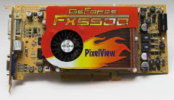

|

История развития - Первым компьютером, оснащённым устройством вывода изображения на экран, считается Whirlwind, строившийся в период с 1944 по 1953 год. Видеоадаптер компьютера Whirlwind мог отображать до 6250 точек в секунду с адресацией 2048×2048 позиций либо до 550 цифр, кроме того оснащался световым паром. В марте 1973 года вышел мини-компьютер Xerox Alto, который можно назвать первым персональным компьютером. Alto имел графический интерфейс с метафорой окон и рабочего стола, для этого он оснащался контроллером дисплея, позволявшим выводить на экран монохромное изображение разрешением 606×808 пикселей и монитором портретной ориентации. В 1975 году поступил в продажу Altair 8800. Изначально он не оснащался ни какими средствами ввода-вывода, кроме набора тумблеров и светодиодов на передней панели. Предполагалось подключение его к телетайпу или текстовому терминалу. Однако в 1976 году в продажу поступила видеокарта Cromemco Dazzler[en], позволявшая выводить на экран обычного бытового телевизора цветное изображение, сформированное в памяти компьютера. Первая версия позволяла выводить изображение до 128×128 пикселей, следующее поколение — до 756×484.
|